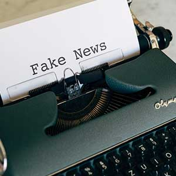

BBC handed $8m war chest from government to stop dictatorships giving their people fake news | Facebook wrongly removes coronavirus adverts bought by UK government; the company admitted it should not have blocked vital bulletins about lockdwon rules, social distancing and business relief. Thousands of people died needlessly as a result of government mistakes in the handling of the coronavirus pandemic, Dominic Cummings has said. The PM's former top aide said Boris Johnson was "unfit for the job", claiming he had ignored scientific advice and wrongly delayed lockdowns. He also claimed Matt Hancock should have been fired for lying - something denied by the health secretary. "Tens of thousands of people died, who didn't need to die," Mr Cummings added. At a marathon seven hour evidence session, the former Downing Street insider painted a picture of policy failure, dithering and a government that had no useful plan for handling a pandemic. He told MPs: "The truth is that senior ministers, senior officials, senior advisers like me fell disastrously short of the standards that the public has a right to expect of its government in a crisis like this." He added: "I would like to say to all the families of those who died unnecessarily how sorry I am for the mistakes that were made and for my own mistakes at that." Mr Cummings - who was forced out of Number 10 at the end of last year after an internal power struggle - said those on the front line of the pandemic were like "lions" being "led by donkeys". But he claimed Mr Johnson had told him he liked to be surrounded by "chaos" in Downing Street, because it meant everyone had to look to the PM "to see who is in charge". Asked if he thought Mr Johnson was a "fit and proper person" to get the UK through the pandemic, Mr Cummings replied: "No." Mr Johnson hit back at some of his former aide's allegations at Prime Minister's Questions, insisting that the government's priority had always been to "save lives". But Mr Cummings said that despite nearly losing his own life to Covid, the PM thought the first national lockdown, on 23 March last year, had been a mistake - and he was against a so-called "circuit breaker" lockdown in autumn 2020 for economic reasons, despite scientific advice. Asked on what basis the PM had taken this decision, Mr Cummings said: "He wasn't taking any advice, he was just taking his own decision that he was going to ignore the advice." He added: "The cabinet wasn't involved or asked." Asked if the prime minister had said he would rather see "bodies pile high" than take the country into a third lockdown, as reported by the BBC, Mr Cummings said: "I heard that in the prime minister's study." Mr Johnson has denied making these comments.